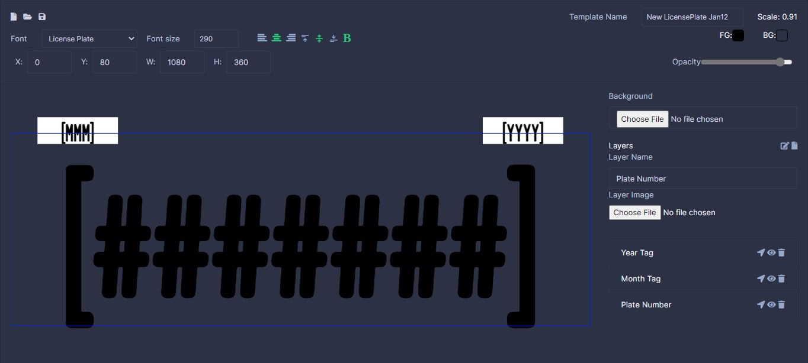
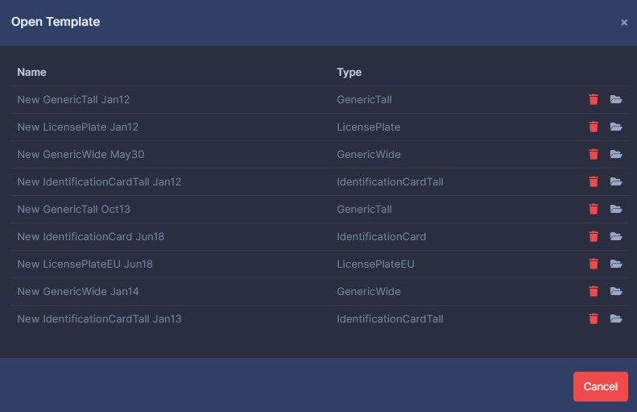

Templates

Exploring the builder

With a layer selected From top to bottom the file icon is new, the folder icon is open and the disk icon is save.
You have the layers font, font size, left,center,right alignment and bold.
The X,Y values are the position on the image the layer starts at. W, H are the height and width of the layer.
Over to the Right you have the Template Name. Town Control will scale templates to the width of your screen. This is done for smaller monitors and does not effect lower quality of the of the template as it will save at the original size.
Under that you have your standard color selectors. The left most is the text color, and the right most is the background color.
Opacity is a new feature in version 4. This will change the over all visibility of the selected layer.
Selected layers are highlighted in blue and can be dragged around with your mouse.
Important
For the moment you will need to zoom out on your browser for tall templates to scrolling down the page will disable eh ability to drag layers of some broswers.
On the right you have background file. Under that is the layer options. The edit icon allows you to change the layers text. The file icon creates a new select of the selected type. The layer name is below that. Follow by the list of layers with Select, Hide, and delete icons for each layer.
Creating a template
Clicking the file icon at the top left will bring up this dialog.
:::image type="content" source="../images/towncontrol/templatesbuilder/new.jpg" alt-text=""::: Select the template you wish to create.
Note
As of TownControl V4 by default templates all templates but generic are pre-filled with the default layers. Generic templates are used for Disability Placards and Vehicle Titles.
Opening and deleting templates
Templates can be opened by click the folder icon. A new dialog will appear.

Clicking the file icon again will open the template. The trash icon will delete it.